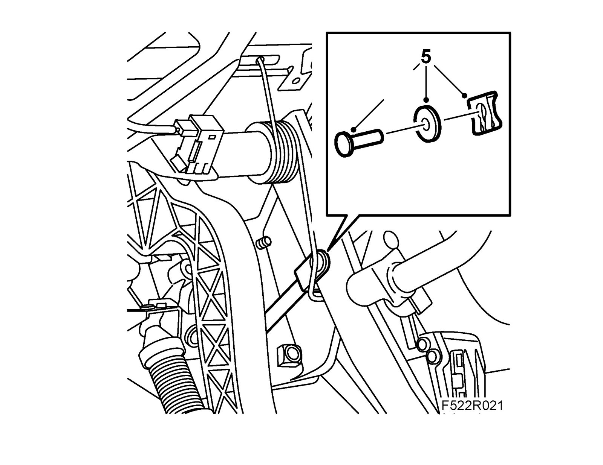
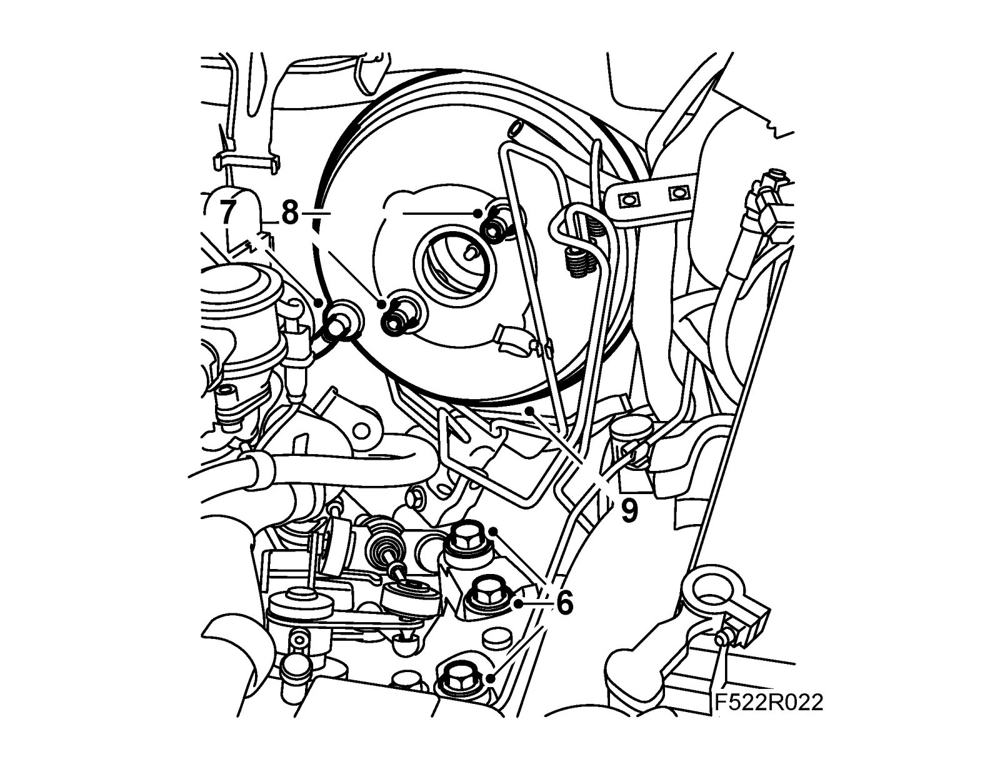

Vacuum Brake Booster: Service and Repair
Brake servo, LHDTo remove
1. Put on 82 93 706 Wing cover.
2. Remove Hydraulic unit, TCS/ESP.
3. Remove Master cylinder.
4. Remove Acoustic baffle, driver.
5. Remove brake pedal link bolt.

6. Place a jack underneath the engine. Undo the bolts on the left engine mounting to lower the engine about 20 mm.
7. Detach the vacuum hose from the brake servo.

8. Remove the brake servo bolts.
9. Remove the brake servo from the bulkhead.
To fit
1. Change the brake servo gasket.
2. Put the brake servo in place. Secure the brake servo bolts with 74 96 268 Thread locking adhesive Fit the brake servo bolts.
Tightening torque: 20 Nm
3. Fit the vacuum hose to the brake servo.
4. Lift up the engine. Fit the engine mounting bolts.
Tightening torque: 70 Nm +45 ° (52 lbf ft +45°)
5. Fit the brake pedal link bolt.
6. Fit Acoustic baffle, driver.
7. Remove Master cylinder.
8. Fit Hydraulic unit, TCS/ESP
9. Remove 82 93 706 Wing cover.